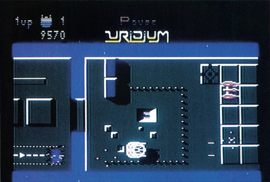
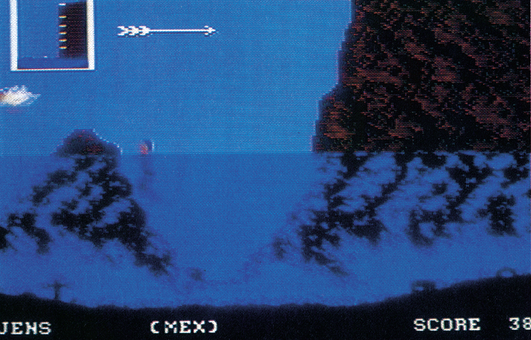
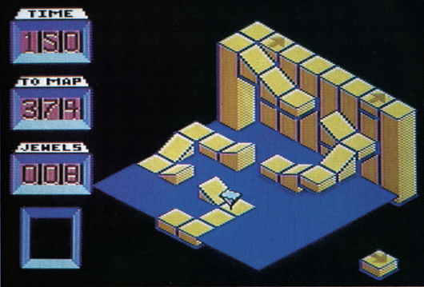
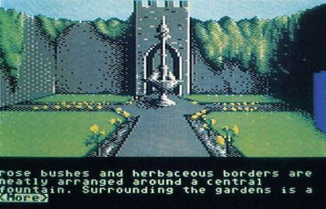
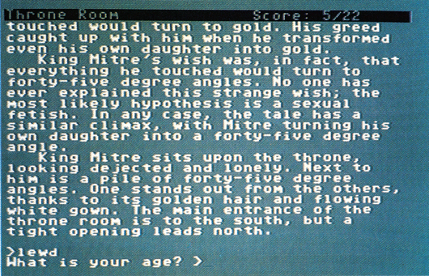
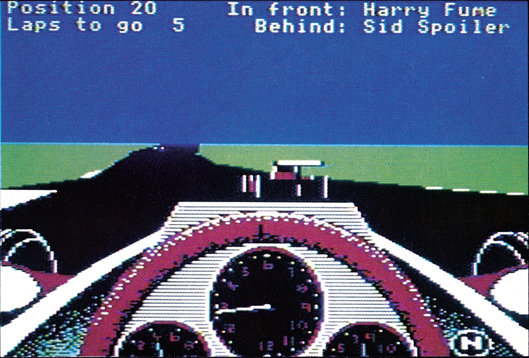
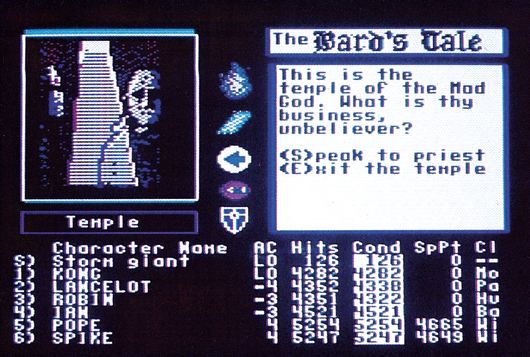
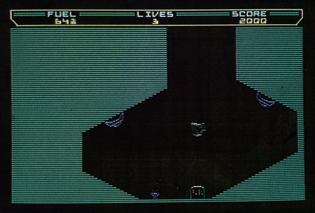
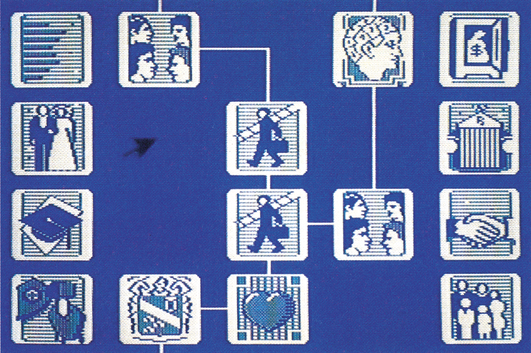
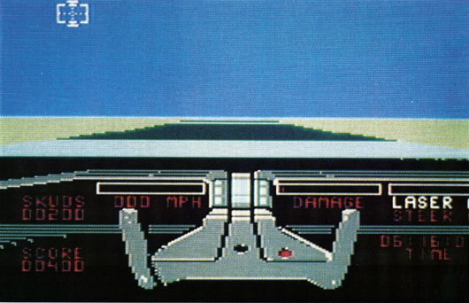

Computerspiele des Jahres 1986
Das Jahr 1986 war wieder einmal ein Jahr, das mit vielen Spiele-Neuerscheinungen gesegnet war. In insgesamt zehn Kategorien stellen wir Ihnen vor, was 1986 für Furore sorgte, Redakteure in Entzücken versetzte und neue Maßstäbe für den C 64 schuf. Dabei scheuen wir uns auch nicht, den Reinfall des Jahres zu küren und Sie nach Ihrer Meinung zu fragen. Wer uns antwortet, kann brandneue Spiele gewinnen, das Mitmachen lohnt sich also.
Das Jahr 1986 neigt sich seinem Ende zu und es wird Zeit, einen kleinen Rückblick zu unternehmen. So haben sich die für Spiele verantwortlichen Redakteure der Zeitschriften »Happy-Computer« und »64'er« zusammengesetzt, und in einer langen Diskussion ausgewählt, welche Spiele die Software-Preise der Redaktion für das Jahr 1986 erhalten.
Die Auswahlkriterien waren recht unkonventionell: Welche Spiele haben wir am liebsten getestet? Womit schlugen wir uns privat die Nächte um die Ohren? Zu welchen Programmen kehren wir immer wieder zurück? Aber natürlich wurden auch die »normalen« Kriterien wie Grafik, Sound und Spielwert eingehend berücksichtigt.
Nach lebhaften Diskussionen entstand die nachfolgende Liste von Computerspielen, die uns 1986 am besten gefallen haben. Die Auswahl ist natürlich subjektiv, aber wir wollen auch unseren Lesern die Chance geben, ihren Hit des Jahres zu wählen.
Bestes Actionspiel 1986: Uridium (Hewson)
Uridium läutete die Rückkehr des Actionspiels ein. Das Programm, das im Frühjahr 1986 erschien, überzeugte uns nicht nur durch pausenlose Action, sondern auch durch seine technische Perfektion, die Maßstäbe für viele weitere Action-Spiele setzte.

Bestes Sportspiel 1986: World Games (Epyx)
Nach dem Erscheinen von »Winter Games« glaubte man, daß Epyx einen Schlußstrich unter die Sportspiel-Serie gesetzt hatte. Doch mit World Games legten die Programmierer dann ein Spiel vor, das die Vorgänger im Einfallsreichtum um Längen schlägt.

Bestes Geschicklichkeitsspiel 1986: Spindizzy (Electric Dreams)
Spindizzy erinnerte uns zuerst an einen »Marble Madness«-Verschnitt, entpuppte sich dann aber als 3D-Spiel erster Güte. Die knapp 400 verschiedenen Screens fordern nicht nur Geschick mit dem Joystick, sondern auch Taktik und logisches Denken.

Bestes Grafik-Adventure 1986: The Pawn (Rainbird)
Als dieses Adventure im Sommer auf dem Atari ST erschien, dachte man, daß eine gute C 64-Version unmöglich sei. Daß die Programmierer das Unmögliche möglich machten, können Sie im Test von The Pawn in dieser Ausgabe nachlesen.

Bestes Text-Adventure 1986: Leather Goddesses of Phobos (Infocom)
Mit diesem Programm bewies Infocom mal wieder, wer der König des Textadventures ist. Die irrsinnige Handlung, die Science-Fiction, Sex und Satire miteinander verbindet, gekoppelt mit dem fast perfekten Parser, sichern Infocom den Preis.

Beste Simulation 1986: Revs (Firebird)
Nach zahlreichen Autorenn-Spielen wie »Pitstop« und »Elektraglide« gab es mit Revs die erste richtige Renn-Simulation. Unter Mithilfe von bekannten Formel-3-Fahrern entstand ein Simulator, dem es an Realität und Spielvergnügen kaum mangelt.

Bestes Rollenspiel 1986: The Bard's Tale (Electronic Arts)
Nach den Achtungserfolgen von Spielen wie »Ultima« konnte mit Bard's Tale das erste Mal ein Rollenspiel in großen Stückzahlen verkauft werden. Die tolle Grafik und Komplexität des Spiels taten sicher ihren Teil dazu. Eine Fortsetzung soll bald erscheinen.

Bestes Billigspiel 1986: Thrust (Firebird)
Eine kleine Sensation war die Veröffentlichung von Thrust, das für zehn Mark wesentlich mehr Spielwitz bietet als teurere Kollegen. Die Grafik ist zwar recht simpel, die Musik dafür aber eines der besten Stücke auf dem C 64. Für wenig Geld ein tolles Actionspiel.

Beste Spielidee 1986: Alter Ego (Activision)
Ein Psychologe zeichnet für dieses Programm verantwortlich, das man als »Lebens-Simulation« bezeichnen kann. Die Idee hinter Alter Ego ist ungewöhnlich und faszinierend zugleich. Somit hat dieses auch grafisch gelungene Programm diesen Preis verdient.

Größter Reinfall 1986: Knight Rider (Ocean)
In England wurde anderthalb Jahre lang Werbung für Knight Rider gemacht, das sich dank schlechter Grafik, Sound und Spielmotivation einen sicheren Platz in der hintersten Ecke der Software-Annalen gesichert hat. Ähnlich erging es vielen anderen Film-Spielen.

Knapp vorbei...
Natürlich ist uns die Auswahl nicht immer leichtgefallen, denn schließlich gab es in fast allen Kategorien viele gute Spiele. Deswegen finden Sie im folgenden zu jeder Kategorie eine Liste von weiteren Spielen, die nur knapp am ersten Platz vorbeigerauscht sind und deswegen von uns auch bedacht werden sollen.
Action- & Geschicklichkeits-Spiele
— Tau Ceti (CRL)
— Paradroid (Hewson)
— Ghosts'n Goblins (Elite)
— Der Kürbis schlägt zurück (Palace)
Adventures & Rollenspiele
— Perry Mason (Telarium)
— Murder on the Mississippi (Activision)
— Trinity (C 128, Infocom)
— Ultima IV (Origin Systems)
Simulationen
— Silent Service (Microprose)
Billigspiele
— Spellbound (Mastertronic)
— Master of Magic (Mastertronic)
— Go for the Gold (Americana/U.S.Gold)
Sportspiele
— Leader Board (Access/U.S.Gold)
— International Karate (System 3)
— Two-On-Two-Basketball (Activision)
Spielidee
— Robot Rascals (Electronic Arts)
— Hacker II (Activision)
Wie gesagt, ist das die ziemlich subjektive Meinung unserer Redakteure. Wer anderer Meinung ist, sollte deswegen gleich den nächsten Artikel lesen.
(bs)